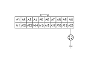

Audio System Symptom Troubleshooting - Radio preset memory is lost
Radio preset memory is lost
Inspect the under-dash No. 6 (10A) fuse.
Is it OK?
YES
-
Go to
Step 2
.
NO
-
Replace the fuse and reset. If it fails again, repair the short to ground in the harness.■
Remove the audio-HVAC display module.
Turn the ignition switch ON (II).
Measure voltage between the audio unit connector A10 terminal and body ground.
Is there battery voltage?
YES
-
Go to
Step 5
.
NO
-
An open wire between the under-dash fuse/relay box N11 terminal and audio unit A10 terminal.■
Check for continuity between the audio unit A20 terminal and body ground.
Is there continuity?
YES
-
Faulty audio unit.■
NO
-
An open wire between the audio unit connector A20 terminal and body ground (G504).■
